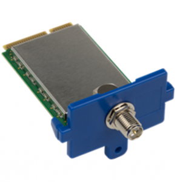
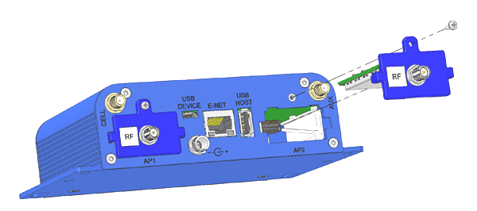

Welcome
This tutorial will focus on Configuring the Multitech Conduit Gateway:
- Installing LoRa-mCard (MTAC-LORA)
- Updating the packet-forwarder
- Configuring the Packet-forwarder
The Hardware
| MultiTech Conduit | MTAC-LORA |
|---|---|
|  | |
| info | info |
Inserting the MTAC-LORA module
- Disconnect power to the gateway device.
- At the back of the housing, determine where you want to install the accessory card. You can install the card in either the AP1 or AP2 port. Remove the port cover and retain the screw.
- Slide the card into the opening and push until you feel the card connector seat in the internal connector.
- Use a small Phillips screwdriver to attach the card bracket to the housing with the screw from the port cover.

Connecting the Gateway
- Connect the antenna to the
MTAC-LORAmodule. - Connect the Ethernet cable
- Connect the Power Suply
- The gateway should now boot up
Loging into the Gateway
The gateway can be configured by using the serial port.
- Connect the gateway to your computer with a Micro-USB-cable to the USB Device Port.
- Open up a Serial monitor tool such as putty.
- Configure the Serial monitor tool:
- Select the right COM-Port
- Enter the Baudrate of
115200 - Select for Flow Control:
XON/XOFF
- Open the Serial monitor
Log into the A.E.P. Gateway:
- The Login should appear. If not hit a random key.
- Login with the following credentials:
- Username: admin
- Password: admin
- If the login was successful the commandline should appear:
admin@mtcdt:~#.
_ _____ ____ / \ | ____| | _ \ / _ \ | _| | |_) | / ___ \ _ | |___ _ | __/_ /_/ \_\(_)|_____|(_)|_| (_) MultiTech Systems Application Execution Platform with mLinux GNU/Linux mLinux 3.1.0 mtcdt /dev/ttyGS0 Version: 1.1.2 Date: 2016-01-13T09:59:04 mtcdt login: admin Password: admin@mtcdt:~#Log into the mLinux Gateway:
- The Login should appear. If not hit a random key.
- Login with the following credentials:
- Username: root
- Password: root
- If the login was successful the commandline should appear:
root@mtcdt:~#.
_ _ _ __ ___ | | (_)_ __ _ ___ __ | '_ ` _ \| | | | '_ \| | | \ \/ / | | | | | | |___| | | | | |_| |> < |_| |_| |_|_____|_|_| |_|\__,_/_/\_\ MultiTech Systems mLinux GNU/Linux mLinux 3.1.0 mtcdt /dev/ttyGS0 mtcdt login: root Password: root@mtcdt:~#
Updating the Lora Packet Forwarder
Download here the latest
Lora-Packet-forwarderandLora-Network-Serverpacket from the Multitech. The file should be similar to this:lora-packet-forwarder_1.4.1-r9.1_arm926ejste.ipklora-network-server_1.0.8-r0.0_mlinux.ipk
Copy the file to a flashdrive.
Insert the flashdrive into the USB-Port of the Multitech gateway.
Now navigate in the gateway to the flashdrive:
- Navigate to the media folder:
cd /media/ - Navigate to the flashdirve:
cd sda1- It should be named
sda1or similar.
- It should be named
- Install the Lora-packet-forwarder using the
opkgpackage manager:opkg install ./lora-packet-forwarder_1.4.1-r9.1_arm926ejste.ipk - Install the Lora-network-server using the
opkgpackage manager:opkg install ./lora-network-server_1.0.8-r0.0_mlinux.ipk
admin@mtcdt:~# cd /media/sda1/ admin@mtcdt:/media/sda1# opkg install ./lora-packet-forwarder_1.4.1-r9.1_arm926ejste.ipk Installing lora-packet-forwarder (1.4.1-r9.1) to root... Configuring lora-packet-forwarder. admin@mtcdt:/media/sda1# opkg install ./lora-network-server_1.0.8-r0.0_mlinux.ipk Installing lora-network-server (1.0.8-r0.0) to root... Stopping lora-network-server: start-stop-daemon: warning: failed to kill 1117: No such process OK update-rc.d: /etc/init.d/lora-network-server exists during rc.d purge (continuing) Removing any system startup links for lora-network-server ... /etc/rc0.d/K30lora-network-server /etc/rc1.d/K30lora-network-server /etc/rc2.d/S80lora-network-server /etc/rc3.d/S80lora-network-server /etc/rc4.d/S80lora-network-server /etc/rc5.d/S80lora-network-server /etc/rc6.d/K30lora-network-server Configuring lora-network-server. Adding system startup for /etc/init.d/lora-network-server. Found lora card MTAC-LORA-868 Starting lora-network-server: OK admin@mtcdt:/media/sda1/multitech#- Navigate to the media folder:
Configuring the Packet-Forwarder for The Things Network
- Make a new directory:
mkdir /var/config/lora - Copy the example network-server configuration to the
lorafolder:cp /opt/lora/lora-network-server.conf.sample /var/config/lora/lora-network-server.conf Edit
/var/config/lora/lora-network-server.conf(useviornano)Field MTAC-LORA-915 (NA) MTAC-LORA-868 (EU) lora - frequesncyBand 915868lora - frequesncySubBand 2 Not applicablelora - frequesncyEU Not applicabledefault: 869500000 range: [863500000 - 867500000] and [869100000 - 869500000]network[“public”] truetrueRestart the network server:
/etc/init.d/lora-network-server restartCopy the
global_conf.jsonto the right directory:cp /var/run/lora/1/global_conf.json /var/config/lora/Edit
/etc/config/lora/global_config.json(useviornano)Enter the server address depending on your region:
router.eu.staging.thethings.network# EU 433 and EU 863-870router.us.staging.thethings.network# US 902-928router.cn.staging.thethings.network# China 470-510 and 779-787router.au.staging.thethings.network# Australia 915-928 MHz
"gateway_conf" : { "forward_crc_disabled" : true, "forward_crc_error" : false, "forward_crc_valid" : true, "gateway_ID" : "008000000000a08c", "keepalive_interval" : 12, "push_timeout_ms" : 120, "serv_port_down" : 1700, "serv_port_up" : 1700, "server_address" : "router.eu.thethings.network", "stat_interval" : 20, "synch_word" : 52 }Edit
/etc/init.d/lora-network-server(useviornano)Comment out the LoRa network server start code:
# start network server #start-stop-daemon --start --background --make-pidfile \ # --pidfile $net_server_pidfile --exec $net_server -- \ # -c $conf_file --lora-eui $lora_eui --lora-path $run_dir --db $conf_db \ # --noconsole -l $net_server_log #sleep 1change the -c $run_dir to -c $conf_dir:
# start packet forwarder start-stop-daemon --start --background --make-pidfile \ --pidfile $pkt_fwd_pidfile --exec $pkt_fwd -- \ -c $conf_dir -l $pkt_fwd_log echo "OK"Comment out the LoRa network server stop code
#start-stop-daemon --stop --quiet --oknodo --pidfile $net_server_pidfile --retry 15 start-stop-daemon --stop --quiet --oknodo --pidfile $pkt_fwd_pidfile --retry 5Comment out the LoRa network server stop code
#start-stop-daemon --stop --quiet --oknodo --pidfile $net_server_pidfile --retry 15 start-stop-daemon --stop --quiet --oknodo --pidfile $pkt_fwd_pidfile --retry 5Restart the Packet forwarder:
/etc/init.d/lora-network-server restart
#Check if the packetforwarder is running
Check if the gateway is receiving packages:
tail -f /var/log/lora-pkt-fwd-1.log##### 2016-05-17 15:09:32 GMT ##### ### [UPSTREAM] ### # RF packets received by concentrator: 3 # CRC_OK: 100.00%, CRC_FAIL: 0.00%, NO_CRC: 0.00% # RF packets forwarded: 3 (75 bytes) # PUSH_DATA datagrams sent: 3 (738 bytes) # PUSH_DATA acknowledged: 100.00% ### [DOWNSTREAM] ### # PULL_DATA sent: 2 (100.00% acknowledged) # PULL_RESP(onse) datagrams received: 0 (0 bytes) # RF packets sent to concentrator: 0 (0 bytes) # TX errors: 0 ##### END ##### INFO: [up] PUSH_ACK received in 4 ms INFO: [down] PULL_ACK received in 6 ms INFO: [up] PUSH_ACK received in 4 ms INFO: [up] PUSH_ACK received in 5 ms
* For Upstream
1. RF packets received by concentrator (packets are stored in concentrator)
2. RF packets forwarded (packets are forwarded to The Things Network server)
3. PUSH_DATA acknowledged (forwarding acknowledgement)
* 0% : no active connection to TTN backend
* 100% : active connection to TTN backend
* For Downstream
1. PULL_DATA sent (requesting avaliable downstream packets)
* 0% : no active connection to TTN backend
* 100% : active connection to TTN backend
2. PULL_RESP(onse) datagrams received (downstream packets)
3. RF packets sent to concentrator (concentrator sends downstream packets)